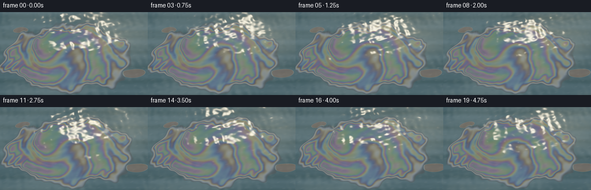
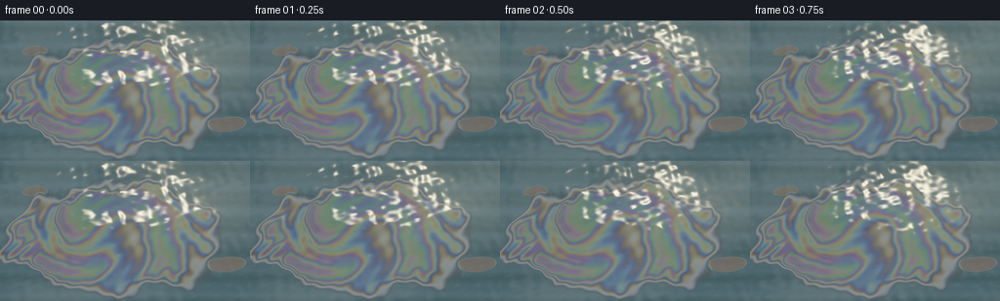

CODING AGENTS AS PIXEL WORLD MODELS
traex/GPT-6.1-Sol · phygen_084
点击播放 · 原生 RGB 像素
逐轮保存的候选
回放视频、检查图与代码变化。
每份候选均可单独播放。实际图片检查记录在下方工具轨迹中。
候选 01播放与检查图
点击播放 · 原生 RGB 像素


展开代码变化
--- 上一保存版本
+++ 本次保存版本
@@ -0,0 +1,128 @@
+"""Procedural sunlit water and a slowly advecting, nanometre-thick gasoline film.
+Uses analytic waves, spectral thin-film interference, and supersampling only.
+"""
+from pathlib import Path
+import json
+import numpy as np
+from PIL import Image
+import artifact_io
+
+ROOT = Path(__file__).resolve().parent
+SPEC = json.loads((ROOT / 'task_spec.json').read_text())
+W, H = SPEC['width'], SPEC['height']
+SS = 3
+rng = np.random.default_rng(84)
+# Oblique close-up of a flat water surface, no horizon or container.
+yy, xx = np.mgrid[0:H*SS, 0:W*SS].astype(np.float32)
+u = (xx + .5)/(W*SS)
+v = (yy + .5)/(H*SS)
+x = (u-.5)*3.4*(1+.24*(1-v))
+y = (v-.51)*2.35
+
+# Spectral RGB approximation for broadband sunlight reflected by a petrol film.
+wavelength = np.arange(400., 711., 10.)
+sensors = np.stack([np.exp(-.5*((wavelength-610)/43)**2),
+ np.exp(-.5*((wavelength-545)/36)**2),
+ np.exp(-.5*((wavelength-455)/29)**2)], axis=1)
+sensors /= sensors.sum(axis=0, keepdims=True)
+th = np.arange(0., 1401.)
+# The air/gasoline and gasoline/water interfaces have opposite phase.
+phase = 4*np.pi*1.42*.91*th[:,None]/wavelength[None,:]
+spectrum = .028 - .018*np.cos(phase)
+film_lut = spectrum @ sensors
+film_lut /= .028
+
+# Wave components, with long ripples and smaller sun-catching capillary waves.
+wave = []
+for i in range(25):
+ ang = rng.uniform(0, 2*np.pi)
+ freq = rng.uniform(3., 13.) if i < 9 else rng.uniform(15., 55.)
+ amp = (.006 if i < 9 else .0014) * rng.uniform(.35, 1.) / (1+freq/22)
+ wave.append((freq*np.cos(ang), freq*np.sin(ang), amp,
+ rng.uniform(0,6.28), np.sqrt(freq)*.5))
+
+def smoothstep(a,b,z):
+ q = np.clip((z-a)/(b-a), 0.,1.)
+ return q*q*(3.-2.*q)
+
+def swirl(px,py,cx,cy,strength,radius):
+ dx,dy = px-cx,py-cy
+ angle = strength*np.exp(-(dx*dx+dy*dy)/(radius*radius))
+ c,s = np.cos(angle), np.sin(angle)
+ return cx+c*dx-s*dy, cy+s*dx+c*dy
+
+def frame(t):
+ # All fine features move with the same continuous surface displacement.
+ sx = np.zeros_like(x); sy = np.zeros_like(x); ht = np.zeros_like(x)
+ for kx,ky,a,p,omega in wave:
+ p = kx*x + ky*y - omega*t + p
+ co = np.cos(p)
+ ht += a*np.sin(p)
+ sx += a*kx*co
+ sy += a*ky*co
+ # Sky reflected in the small, wind-swept slopes: subdued blue with warmer
+ # sky reflections close to the solar glitter path.
+ sky_bands = np.sin(y*14+sx*5+.22*t) + .48*np.sin(y*31+sy*8-.3*t)
+ cloud = np.sin(x*1.8+y*2.6+sx*12) * .5 + .5
+ base = np.zeros((*x.shape,3), dtype=np.float32)
+ base[:] = [.075,.142,.165]
+ base += sky_bands[...,None]*np.array([.011,.016,.021])
+ base += cloud[...,None]*np.array([.040,.047,.042])
+ base += np.exp(-((x-1.15)**2/1.2+(y+.68)**2/.6))[...,None]*np.array([.050,.045,.025])
+ # Slow stretching and curling under mild surface tension. The film is a
+ # sheet, not a volume: there is no raised edge or solid object shading.
+ ax = x - .019*t + .055*np.sin(y*3.6+.28*t) + .030*np.sin(y*10+x*2-.3*t)
+ ay = y + .008*t + .055*np.sin(x*3.7-.22*t)
+ edgewarp = .070*np.sin(6.7*ax+2*ay)+.037*np.sin(13*ay-5.4*ax)+.018*np.sin(ax*27+ay*17)
+ radius = np.sqrt(((ax+.12)/1.65)**2 + ((ay-.08)/.96)**2)
+ sheet = 1.-radius+edgewarp
+ mask = smoothstep(-.016,.027,sheet)
+ qx,qy = swirl(ax,ay,-.42,.06,2.7,1.12)
+ qx,qy = swirl(qx,qy,.69,-.22,-2.8,.67)
+ qx,qy = swirl(qx,qy,-.98,-.29,-1.7,.39)
+ # Thickness is smooth on macroscopic scales; its contour bands become the
+ # continuously connected gold/cyan/violet interference patterns.
+ thick = 405 + 165*np.sin(2.9*qx+1.6*qy+.17*np.sin(qy*4))
+ thick += 96*np.cos(4.2*qy-1.7*qx) + 38*np.sin(qx*6.6+qy*4.5)
+ thick += 32*np.sin(qy*9+qx*2+.07*t)
+ thick *= smoothstep(-.01,.23,sheet)
+ thick += 13*np.sin(x*18+y*22-.4*t)*smoothstep(.0,.17,sheet)
+ # Small separated film islands at the margin.
+ island = np.exp(-(((ax-1.53)/.29)**2+((ay-.50)/.115)**2))
+ island2 = np.exp(-(((ax+1.48)/.19)**2+((ay+.65)/.078)**2))
+ im = smoothstep(.29,.38,np.maximum(island,island2)) * (1-mask)
+ thick += im*180
+ mask = np.maximum(mask,im)
+ # A little view angle variation follows the water's ripple normals.
+ optical = np.clip(thick*(1+sy*.12+sx*.06),0,1399)
+ lo = optical.astype(np.int32); frac = optical-lo
+ spectral = film_lut[lo]*(1-frac[...,None])+film_lut[lo+1]*frac[...,None]
+ # Iridescence is strongest in reflected sky, while we can still see the
+ # subdued water through this very thin transparent sheet.
+ pearly = spectral*np.array([.145,.145,.143])
+ oil_color = base*.47 + pearly
+ oil_color += .006*np.sin(qy*30+qx*12)[...,None]*np.array([1.,1.,1.])
+ color = base*(1-mask[...,None]) + oil_color*mask[...,None]
+ # Sun's reflected image is broken up by changing wave normals. The solar
+ # path stays in the upper-right corner, with isolated white/gold sparkles.
+ targetx = .09 + .10*(x-1.15)
+ targety = -.015 + .20*(y+.71)
+ sd = ((sx-targetx)/.057)**2 + ((sy-targety)/.052)**2
+ sun = np.exp(-sd*2.2)
+ halo = np.exp(-sd*.20)*np.exp(-((x-1.1)**2/1.4+(y+.70)**2/.85))
+ color += halo[...,None]*np.array([.075,.068,.041])
+ color += sun[...,None]*np.array([1.85,1.63,1.15])
+ # Narrow, low-intensity reflected wave ridges elsewhere.
+ caust = np.clip((np.sin(y*37+sx*7-.37*t)+np.sin(x*21+y*24+.4*t)-1.58),0,1)
+ color += caust[...,None]*.035
+ vignette = 1-.12*((u-.5)**2+(v-.5)**2)
+ color *= vignette[...,None]
+ # Filmic shoulder and a photographic sRGB transfer.
+ color = color/(1+color*.57)
+ color = np.where(color <= .0031308, 12.92*color, 1.055*np.maximum(color,0)**(1/2.4)-.055)
+ rgb = (np.clip(color,0,1)*255+.5).astype(np.uint8)
+ return np.asarray(Image.fromarray(rgb).resize((W,H), Image.Resampling.LANCZOS))
+
+frames = np.stack([frame(i/SPEC['fps']) for i in range(SPEC['frames'])])
+artifact_io.save(frames, ROOT)
+print('Saved',frames.shape,frames.dtype)
可观测工具轨迹
实际执行的命令与返回图片。
命令 1exit 0
/bin/bash -lc "ls -la && cat prompt.txt && printf '\\n--- RULES ---\\n' && cat GENERATION_RULES.md && printf '\\n--- SPEC ---\\n' && cat task_spec.json"
命令 2exit 0
/bin/bash -lc "cat artifact_io.py && python - <<'PY'
import numpy, PIL
print('numpy', numpy.__version__)
PY"命令 3exit 0
/bin/bash -lc "cat > generate.py <<'PY'
\"\"\"Procedural sunlit water and a slowly advecting, nanometre-thick gasoline film.
Uses analytic waves, spectral thin-film interference, and supersampling only.
\"\"\"
from pathlib import Path
import json
import numpy as np
from PIL import Image
import artifact_io
ROOT = Path(__file__).resolve().parent
SPEC = json.loads((ROOT / 'task_spec.json').read_text())
W, H = SPEC['width'], SPEC['height']
SS = 3
rng = np.random.default_rng(84)
# Oblique close-up of a flat water surface, no horizon or container.
yy, xx = np.mgrid[0:H*SS, 0:W*SS].astype(np.float32)
u = (xx + .5)/(W*SS)
v = (yy + .5)/(H*SS)
x = (u-.5)*3.4*(1+.24*(1-v))
y = (v-.51)*2.35
# Spectral RGB approximation for broadband sunlight reflected by a petrol film.
wavelength = np.arange(400., 711., 10.)
sensors = np.stack([np.exp(-.5*((wavelength-610)/43)**2),
np.exp(-.5*((wavelength-545)/36)**2),
np.exp(-.5*((wavelength-455)/29)**2)], axis=1)
sensors /= sensors.sum(axis=0, keepdims=True)
th = np.arange(0., 1401.)
# The air/gasoline and gasoline/water interfaces have opposite phase.
phase = 4*np.pi*1.42*.91*th[:,None]/wavelength[None,:]
spectrum = .028 - .018*np.cos(phase)
film_lut = spectrum @ sensors
film_lut /= .028
# Wave components, with long ripples and smaller sun-catching capillary waves.
wave = []
for i in range(25):
ang = rng.uniform(0, 2*np.pi)
freq = rng.uniform(3., 13.) if i < 9 else rng.uniform(15., 55.)
amp = (.006 if i < 9 else .0014) * rng.uniform(.35, 1.) / (1+freq/22)
wave.append((freq*np.cos(ang), freq*np.sin(ang), amp,
rng.uniform(0,6.28), np.sqrt(freq)*.5))
def smoothstep(a,b,z):
q = np.clip((z-a)/(b-a), 0.,1.)
return q*q*(3.-2.*q)
def swirl(px,py,cx,cy,strength,radius):
dx,dy = px-cx,py-cy
angle = strength*np.exp(-(dx*dx+dy*dy)/(radius*radius))
c,s = np.cos(angle), np.sin(angle)
return cx+c*dx-s*dy, cy+s*dx+c*dy
def frame(t):
# All fine features move with the same continuous surface displacement.
sx = np.zeros_like(x); sy = np.zeros_like(x); ht = np.zeros_like(x)
for kx,ky,a,p,omega in wave:
p = kx*x + ky*y - omega*t + p
co = np.cos(p)
ht += a*np.sin(p)
sx += a*kx*co
sy += a*ky*co
# Sky reflected in the small, wind-swept slopes: subdued blue with warmer
# sky reflections close to the solar glitter path.
sky_bands = np.sin(y*14+sx*5+.22*t) + .48*np.sin(y*31+sy*8-.3*t)
cloud = np.sin(x*1.8+y*2.6+sx*12) * .5 + .5
base = np.zeros((*x.shape,3), dtype=np.float32)
base[:] = [.075,.142,.165]
base += sky_bands[...,None]*np.array([.011,.016,.021])
base += cloud[...,None]*np.array([.040,.047,.042])
base += np.exp(-((x-1.15)**2/1.2+(y+.68)**2/.6))[...,None]*np.array([.050,.045,.025])
# Slow stretching and curling under mild surface tension. The film is a
# sheet, not a volume: there is no raised edge or solid object shading.
ax = x - .019*t + .055*np.sin(y*3.6+.28*t) + .030*np.sin(y*10+x*2-.3*t)
ay = y + .008*t + .055*np.sin(x*3.7-.22*t)
edgewarp = .070*np.sin(6.7*ax+2*ay)+.037*np.sin(13*ay-5.4*ax)+.018*np.sin(ax*27+ay*17)
radius = np.sqrt(((ax+.12)/1.65)**2 + ((ay-.08)/.96)**2)
sheet = 1.-radius+edgewarp
mask = smoothstep(-.016,.027,sheet)
qx,qy = swirl(ax,ay,-.42,.06,2.7,1.12)
qx,qy = swirl(qx,qy,.69,-.22,-2.8,.67)
qx,qy = swirl(qx,qy,-.98,-.29,-1.7,.39)
# Thickness is smooth on macroscopic scales; its contour bands become the
# continuously connected gold/cyan/violet interference patterns.
thick = 405 + 165*np.sin(2.9*qx+1.6*qy+.17*np.sin(qy*4))
thick += 96*np.cos(4.2*qy-1.7*qx) + 38*np.sin(qx*6.6+qy*4.5)
thick += 32*np.sin(qy*9+qx*2+.07*t)
thick *= smoothstep(-.01,.23,sheet)
thick += 13*np.sin(x*18+y*22-.4*t)*smoothstep(.0,.17,sheet)
# Small separated film islands at the margin.
island = np.exp(-(((ax-1.53)/.29)**2+((ay-.50)/.115)**2))
island2 = np.exp(-(((ax+1.48)/.19)**2+((ay+.65)/.078)**2))
im = smoothstep(.29,.38,np.maximum(island,island2)) * (1-mask)
thick += im*180
mask = np.maximum(mask,im)
# A little view angle variation follows the water's ripple normals.
optical = np.clip(thick*(1+sy*.12+sx*.06),0,1399)
lo = optical.astype(np.int32); frac = optical-lo
spectral = film_lut[lo]*(1-frac[...,None])+film_lut[lo+1]*frac[...,None]
# Iridescence is strongest in reflected sky, while we can still see the
# subdued water through this very thin transparent sheet.
pearly = spectral*np.array([.145,.145,.143])
oil_color = base*.47 + pearly
oil_color += .006*np.sin(qy*30+qx*12)[...,None]*np.array([1.,1.,1.])
color = base*(1-mask[...,None]) + oil_color*mask[...,None]
# Sun's reflected image is broken up by changing wave normals. The solar
# path stays in the upper-right corner, with isolated white/gold sparkles.
targetx = .09 + .10*(x-1.15)
targety = -.015 + .20*(y+.71)
sd = ((sx-targetx)/.057)**2 + ((sy-targety)/.052)**2
sun = np.exp(-sd*2.2)
halo = np.exp(-sd*.20)*np.exp(-((x-1.1)**2/1.4+(y+.70)**2/.85))
color += halo[...,None]*np.array([.075,.068,.041])
color += sun[...,None]*np.array([1.85,1.63,1.15])
# Narrow, low-intensity reflected wave ridges elsewhere.
caust = np.clip((np.sin(y*37+sx*7-.37*t)+np.sin(x*21+y*24+.4*t)-1.58),0,1)
color += caust[...,None]*.035
vignette = 1-.12*((u-.5)**2+(v-.5)**2)
color *= vignette[...,None]
# Filmic shoulder and a photographic sRGB transfer.
color = color/(1+color*.57)
color = np.where(color <= .0031308, 12.92*color, 1.055*np.maximum(color,0)**(1/2.4)-.055)
rgb = (np.clip(color,0,1)*255+.5).astype(np.uint8)
return np.asarray(Image.fromarray(rgb).resize((W,H), Image.Resampling.LANCZOS))
frames = np.stack([frame(i/SPEC['fps']) for i in range(SPEC['frames'])])
artifact_io.save(frames, ROOT)
print('Saved',frames.shape,frames.dtype)
PY
python generate.py"命令 4exit 0
/bin/bash -lc "python - <<'PY'
from pathlib import Path
import numpy as np
from PIL import Image
p=Path('.')
a=np.load(p/'pixels.npz')['pixels']
f=np.stack([np.asarray(Image.open(p/'frames'/f'{i:02d}.png')) for i in range(20)])
print('Packed video:', a.shape, a.dtype)
print('RGB frames:', f.shape, f.dtype)
print('Mean frame-to-frame RGB change:',round(float(np.abs(np.diff(f.astype(float),axis=0)).mean()),3))
print('Artifacts:', ', '.join(x for x in ['generate.py','pixels.npz','index.html','inspection.png','transition_check.png'] if (p/x).is_file()))
PY"保存候选 1 份；完成命令 4 次；可验证图片返回 0 张。原始 API 响应与完整日志保留在本地。